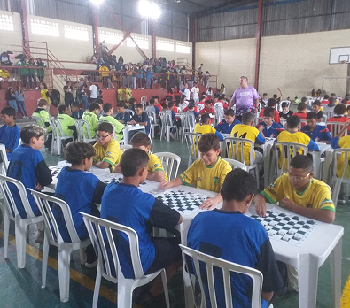

JESSP da capital

O JESSP (Jogos Escolares do Estado de São Paulo) – fase da capital, modalidade damas, realizado no dia
21, reuniu jovens talentos do tabuleiro em uma competição acirrada. O torneio contou com a participação
de diversas escolas, promovendo não apenas a disputa esportiva, mas também o desenvolvimento do
raciocínio lógico e da estratégia entre os estudantes.
As partidas foram marcadas por alto nível técnico, com jogadores demonstrando grande preparo e
habilidade. O evento destacou novos talentos da modalidade, reforçando a importância do esporte escolar
no desenvolvimento dos alunos. Além disso, a competição serviu como classificatória para a próxima fase
do JESSP, onde os melhores colocados avançaram para representar suas escolas em nível estadual.
A organização do evento foi elogiada, proporcionando um ambiente competitivo saudável e
incentivando o
espírito esportivo entre os participantes.